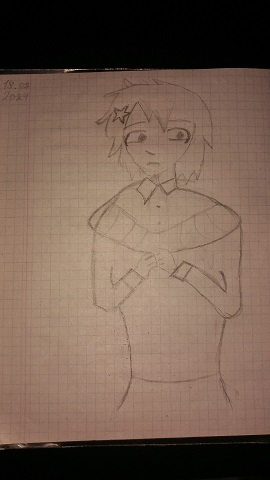
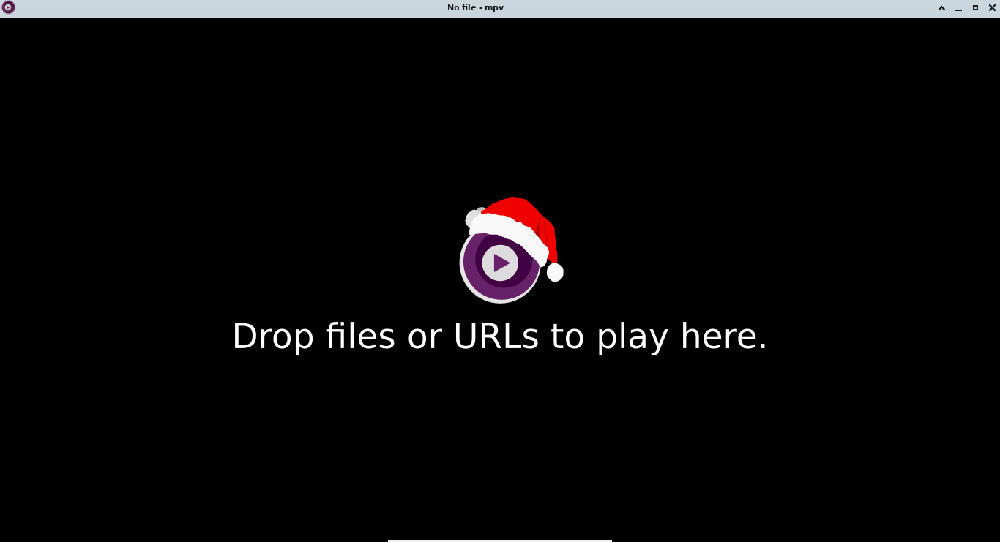
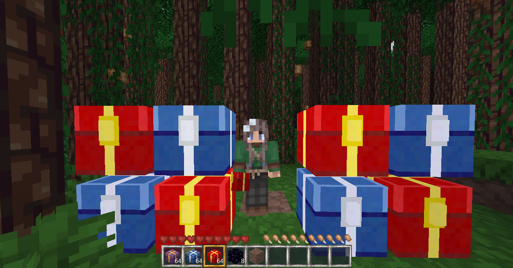

26-07-2024: Please, read my new post "Announcement Service Public". I want to take a break from my blogging, but I am to come back soon! I never leave you! Maybe, I need some time for myself.
20-06-2024: Looks like LibreWolf it is the only fine web-browser. Comparing to Chromium, have more useful functions.
Internet is really terrible thing. We are using Internet to fill our boredom, even by reading blogs. I like that someone follows me, but it's been better, if people just schedule some time to surf Internet, like one hour a day, or few hours a week. Internet can cause anxiety, just by giving us so much information, mostly sad and disgusting, or at lease useless. You do less physical exercises, or just take a horrible position for spine.
I take my usb drives, but i use them only to watch Ponyo and Wall-E on TV at my sister's house. I just forget about all these websites, blogs, or even music. Sometimes everyone should take a new look at life, even for a few days.
Even my notebook is optional here, all i need is to use Internet maps, but i do this with my smartphone. I use my notebook for writing these posts, but i can do the same with my smartphone.
18-07-2024: I like to feel uncomfortable. Only that feeling will make me more productive. Today i try to recreate some painting i found on the Internet, and i don't do this for a long time, but today is just a great moment. Finally, after three months of waiting, i saw rain in the window.
This should be a really busy week, but i also try to take the best from this moment, living in Melitopol. Today i found some companion for me in university, so this is exciting to know, i found friends in strange and never visited place.
David Bowie also liked make yourself uncomfortable to create some new ideas for his music.
17-07-2024: Since i feel lonelines lass few months or even years, i think i should try to post more daily thoughts. So yes, maybe at some part my diary becomes shitposting, but i'll try to make informative and intersting mini-posts.
Some girl from the Internet lives without friends, and she feels yourself fine, but i feel very tired without friends, but the same time not so much people want to talk with me, so maybe my posts help me a little bit. I am very inspired of her, she is looks like really happy person, by just playing videogames, watching anime and just make some posts about her life. So, maybe you see my face more in future posts. My grammar very bad, but trying to improve it! Good Luck!
P.S: Now i am living at my sister's house, and this is really makes me nervous. Sitting all day only with my mother, it feels really boring.
24-06-2024: I hate Hedonism and Nihilism, and i have a lot of reasons to think like that. During all my life, i meet different people, some of them are really great, but some just disgusting, and maybe in average life they are fine, but when they are start to drink alcohol, or any other forms of taking pleasure without Nature's will, i feel like they are just lose contact with others, and their own souls, like anything around them just disapears.
This people dangerous to others, because they are feel, like anything, they are disapprove should'nt exist, and they are want to destroy objects of their hate in the most hard way. Racism, Nationalism, Radical Femminism and other forms of agression take their origins from hate.
Anyway, the same time i support Utilitarianism, because it's the way to make all of us happier. Maybe, we cannot stop Hedonism, because it's origins from the inside of human body, but we can make this people think different. Anyway, if you are see someone just didn't want listen to you, don't care about this person, because you only do worse to yourself. Also, you can read my friend's Thricegreat article "Why Hedonism Enslaves You", and listen to Nine Inch Nails album "The Downward Spiral", a really great album, based on Trent Reznor's own experiance with loneliness, substance addiction, and describes the worst feelings in this world. Also, Russian writer Ivan Turgenev discribes Hedonism in his novel "Fathers and Sons", personally i didn't like this novel, but maybe you are found something brilliant in it.
21-06-2024: Yesterday i'll need to wait my doctor, and i wait her for two hours. I prefare to kill some time in garden near hospital. And i never thought, it've got so much emotions. This garden didn't have something special: trees, bushes, but i understand, that we are miss so much important things around us. Walking around, i start to think about building my own garden, in my head, like out of blue appears some beautiful name - Invet, it feels like Nature give me artistic inspiration itself. I tried to make some melody on my phone.
After i come home, i don't want anything: listen to music, read something, i just eat my breakfast and take a little nap, firs time in three years. When i wake up with a really good feelings, i just didn't want to deaden them with noise of Internet, or anything else. This day i can call "screen-free", because i check my smartphone only a few times to make some notes, shot photos, and i didn't use my notebook this day, i take a little walk around my street, and play my guitar instead.
Last days no one writes me, i rearly contact with other people, for some strange reasons, but moments like this give me another reason to love Goddess Nature and this life.
19-06-2024: Did you have some plans for this Summer? Personally, i am getting ready to live by yourself, without my parents. I have some plans to study in university. Don't want to make some great plans, but i was happy to finally meet my sister in a long time, after a few years of separation, and we will study at the same university. So, how about you, do you want to learn something, or just have fun with friends, or even go through the same feelings with me?
25-05-2024: I want to try limit my Internet connection speed. Now i have only 50GB for month (Anyway, this is enough for me), and having connection speed like this can take my traffic too fast. But, i am also think about my past, when i've just got unlimited Internet acess, i'll have ~130 kb/s, so 100mb will take 15 minuites, and 1gb take 2.5 hours. Yes, sounds crazy, but i understand, how i've been happier, when don't take so much, and wait a lot, just to download some videogame. I'll never been busy, i'll have only one task, emotions been really natural. Anyway, this is just a little experiment. I limit speed in qBitTorrent, and uGet, but in Windows and Android it's really hard to do this with native software. But, Chromium-based browsers also have possability to throttle speed with DevTools.
13-05-2024: In mid-2020, some girl draw for me this four drawings, and they are so good, that maybe it's just one of the best presents i've got for all my life. Just one of the most important things for me.


22-04-2024: Some funny photos from me: :D


04-02-2024: My dear readers, today is really great day for all my life. Today we are reach 100,000 views on my Neocities website. I never reach something big for all my life, and first of all, i want to said "Thank You!", without you it's being just impossible. I am still to contribute for this blog, and try to write something new and interesting. I belive, we still think and create something great together in future!
03-10-2023: I take a little break, but now don't know, what i can write for this blog. I am alive, and I am fine, and i don't have plans to stop my website, but i need to found something interesting to write about. Good luck!
17-07-2023: I understand, that in this time it's hard for me to take pleasure. Every time, i play guitar i am feel nothing. Now listening music become very boring process. Programming the same don't give me any emotions. I don't know, what's happening. This is makes me sad. Music being one of the most important things for me, since middle school, and i remember, how listening to alternative rock in 2020, while i am make my rpg game on python, i feel yourself like in heaven. But now, i am don't want to make music, of something like this. Remember, how i am start to play music by ear. Remember these dark days, when it's being something new for me. I have only acoustic guitar, but almost all of my music is uses electric guitars, and i cannot buy electric guitar or pedals for it. I start to feel youself isolated, like there is no perspective in this place. I am feeling, like i need to go from here as fast, as i can, because this place stay only with bad emotions. There is no my brothers and sister, i still have only father and mother, some of peoples leave forever this year. But i don't know, what i should do? if i am drop guitar for a few days, maybe i dorp it at all. I don't have ideas to make music. Other peoples, like Linkin Park, Queens of The Stone age, or even some underground bands, like MyVeronica make a lot of great music with just 3-4 notes, but it don't see something, that sounds good, even if i have 10 notes (After second time, i have COVID, my body lose sensitivity, my nose don't even works scine this time, and maybe ears too). Please, don't repeat my mistakes, don't take so much stress, if you can.
18-04-2023: I should take some break from blogging and my activities at all, with all this problems in my life i become useless peson, who lost almost all, that i have. This blog - it's the only thing that i have, and i achive something. I don't have energy to make something, and i don't know, how much time i need, i just know, that now, in this moment it's hard for me to do something easy. The same with my personal life, i lost interst to school and music. Anyway, there is a lot peoples with bigger peoblems than mine, but for my average happines rate, i take some fall.
26-03-2023 (Day 26/92 Spring): How i see a good world:
04-03-2023 (Night 4/92 Spring): Views and Subscribers counter is harmful: While i see, that peoples read me every day, i feel happy, but if i see it every day, i need more, to feel the same. It's like drug. So, with all this you start to make content for this feelings, not for youself. I'm just happy, when i see and know, that peoples likes me, but i don't want to see how much peoples do it, i just wish to know that. So, sadly Neocities cannot hide views counter from me. I need to use uBlock Origin. The same with any other website and social media, it's drug of 21st century. Just know, that he best happines - it's happines, that you got from things, that you likes to do.
11-02-2023: I think, it's end of my career as programmer, and in some parts as blogger. I don't want to have deal with this world, that dominated by big corporation, that always try to remove a great technology, and replace it with their's own "smart" technology. I've got this feeling, when yesterday my Huawei Matebook comes to me, and i see alot of problems, like it's don't have Ethernet port, cannot boot to Linux (i try it on my old HP Pavilion with two USB Drives, and all works, but here is i've got boot problem). For a lot of money i have a useless machine for watching films only (writing text here - it's pain, the same with listening to music, i never hear worse sound of FLAC files, or YouTube videos at all). You can read my article, called "Computers become useless", where i write other problems of computers. Don't fear, if you love my blog, i still write my articles, because i love you, but now i want more concentrate on music, and learning music software/theory. I feel uncomfortable without Unix enviroment, i just cannot work with Windows as daily OS (Windows 7 is nice by design and it's software, but it's outdated). Anyway, i install Python and Lua, Lazarus on my computer, i programming now for yourself, and don't want to work as programmer. After some time, you are got an Ambient froject from me, i release all my music absolutley free on a few platforms: Internet Archive, Bandcamp, and other...
P.S: I think, that in this year i cannot buy Meteora album to the 20 years of this album, yesterday i relisten to it, and one more time understand, how great this work. But sadly, we don't have acess to other world production because of Russia-Ukraine conflict. This is worst year, i still fall into my addictions, and consoome more, than i create in multiple times. My review on "Lost": really great song, i really can't remember, when i've got so powerful feelings from music. Every should listen to it, and watch this awersome musical video.
24-01-2023 (Night 56/90 Winter, 2023): My notebook is broke, and i feel really bad physically and my psychically, i'm unstable, and have some probles with school, but i still write brog with my smartphone, that my parents buy me yesterday. and i stil gope, that this year fonna feel so godd, that's only it's beginning.
17-01-2023 (Night 49/90 Winter, 2023): You should stop swearing: using bad words, you spread negative in our world. ALso, you start to use it more and more, and finally you said it every 5 words. Please, stop this, and use positive and good words instead! It's not cool, it's harm! I don't think you can found reasons to use it (And in art too). Linkin Park, The Rasmus and Queens of the Stone Age use it rearly.
16-01-2023 (Night 48/90 Winter, 2023): I start to use my notebook without mouse and keyboard (I use it because left Shift doesn't work), but now i need to use right Shift, that not so easy now. I hope, it's can make my experiance more good. :)
14-01-2023 (Night 46/90 Winter, 2023): Yesterday (13 January 2023) i become 16 years old. Now, on next day, i undrrstand, how i changed in one day or month before this. Now i'm not so usually listen to music with teenage lyric, now i more concentrated on orcestral and soft music, but i never forgot, what Linkin Park, The Rasmus and Evanescence, Bring Me The Horizon do for me. I want to have much more time for myself, but all this school and school projects make me bored. I don't said that education bad, but when after biology i have literature and than PE, it's so hard to do this everyday, and still have time for yourself. I start to read much more, and have wish to unerstand Math, and not just for programming, i want understand all, that i miss with Online-School. Now i start to learn piano, but now only have toy synthizer. I also want to learn harmonica and drums. I really want to create my band. Yesterday i really underatand, how Queens of the Stone Age is great band, theirs live sessions and studio albums - it's something, that maybe one of the best on 2000s Rock Music. All this repeating guitar and drumm rifs like in "A Song For The Dead" - something great. Wathing theirs lives understand, that today's music lose that energy, that give you miotivation to live. Listening this 2000s bands you understand, what is - a perfect band, because it's music, when peoples just make it for fun, and make it good.
That being one of the best Birthday's in my life, we are playing with my friend in Minetest, and making some parodies to rap songs with sick lyric, and that being really fun. Huh, my friend really crazy sometimes - he is take a notebook in backpack :D
Also, i have progression in leaving my addictions.
06-01-2023 (Night 38/90 Winter, 2023): Reasons to don't use Shazam:
01-01-2023 (Night 32/90 Winter, 2023): My Method to safety change guitar strings:
Today for me is hard to every time buy new strings, i phisically cannot do this, because we don't have mail and Internet Shops. So, i need to ask peoples to buy me strings from Crimea, and it's price a lot bigger, than before.
25-12-2022 (Night 25/90 Winter, 2022): IDE is killing spirit of programming. Only now, when i come from nano to Mousepad to writing my code, i understand, that IDE's is make our bad at learning programming. I have article about IDE, but now i understand, that we are don't need it, if we want to know programming on 100%, i accept now only Lazarus, because it's instrument for peoples, that don't want to going deep in this, but want to make something, or you want to make graphical interface/learn Delphi.
25-12-2022 (Day 25/90 Winter, 2022): Paramore have song, called "Misery Business", and it's lyric have this good part "It just feels SOOOOOO GOOOOOD". So, i think, this song can said, how i want live in 2023, i finally wan to drop my addictions, and take it serious yesterday, so now i just gonna feel soooooo goood! :D
P.S:
24-12-2022 (Night 24/90 Winter, 2022): The same, as Minecraft, Minetest mod, called MineClone2 and Mineclone5 have some easter egg, when time near New Year and Christmas, chests have another texture:
23-12-2022 (Night 23/90 Winter, 2022): Only now i understand, that the only place - where i really alone, and where we don't have Internet and computers, TV, music - it's, my bathroom.
15-12-2022 (Night 15/90 Winter, 2022): Reasons, why pen's is harmful, and you should switch to pencils:
01-12-2022 (NIGHT 01/90 Winter, 2022): Remember. when i being kid. i play with my brother Minecraft Pocket Edition, we are have a lot of ideas, we are build houses in hills, underground, and just cool houses, and infrastructure. I so miss that time, we are have a lot of ideas, and Minecraft being not bloated, like today with all this XBox Live, we are just use single smartphone, or play with Wi-Fi, Bluetooth, and it's being 0.9.0, it's verion don't have so much blocks, but it's enough to be happy. Today Minecraft give you so much, i want come back...
28-11-2022 (DAY 89/92 Autumn, 2022): About time: Why do we need hours, minuites and seconds? Is we cannot just use DAY and NIGHT for personal life, not work? The same with month, is we cannot use seasons (Winter, Spring, Summer, Autumn)? With all this hours and months we cannot full relax, always thinking about time, that we loose on something "not important, like life". Is you should work every second, every minuite, every hour, and every day? (It Never Ends, It Never Ends :D). So, now i think i write my Diary posts with format like this - "DAY 89/92 Autumn, 2022" (DAY of 89 Autumn from 92 of 2022 year).
27-11-2022: I being happier. while:
But i become happier, when:
21-10-2022: I have plans to start make table game about Command & Conquer. I hope, i can end this up!
24-09-2022: Today i lost acess to my Discord account, so now i need to transfer my friends to other ways of speaking. I have some eMails of my friends, but not of all. Mybe, it's good moment to drop Discord. Anyway, i don't have plans to come back to Discord. All have email, and some of my friends, that accept my comfort, register at XMPP. I make an article, if it's really changed my life, because of Discord every year make me more depend on. And, all updates for 5 years - it's trash. Now it's really hard to use new interface of Discord, than use it's 2017-2018 version.
11-09-2022: Soo, 1 September i go to school, and now i don't have so much time to make new content for blog, but i still write something, just updates can be now not so usually, like one time a week. But, i hope, that i end school with good mark's, this year i want to give a lot more time for my study.
2022-07-04: Last day's i just don't have ideas, what i can add to my blog, sometimes i did some minor fixes, but that's all, maybe i need to take a break from Internet.
2022-06-03: We are don't have Internet about one week. Huh, i've got a many time to think, "Is i need Internet connection everywhere?", i have a huge collection of music, offline sites, i start to clear my computer envirement, this time i have a huge concentration on impportant thing's, i start to learn Linear Algebra, and, the only reason to have Internet everywhere - it's communication with my friend's, other time i can live without Internet. If you want to have more free time, try to unplug Internet for some day's, i also think, what i can append to my music/film's/cartoon's/anime/eBook's collection, i think, i need to copy this to USB, to have acess everywhere. YouTube is being for me the only place, where i spend almost all my free time, and now i understand, that i don't lose so much, if i stop to watch YouTube everyday, i want to spend time for vlear my subscribtion's, i think, that i don't need to have more, than 40 channel's (Almost all of them - it's channel's, what i view in childhood, big part of them inactive now, if remove that, it's being about 15-20 channel's).
P.S: I start migrate to MPlayer in SMPlayer, i just can write script, that download all my music video's (Jsut music i download as ogg (vorbis) audio-file's) from YouTube with yt-dlp, i still mantain my playlist's, but now i have less program's in my computer. :)
2022-03-01: I have plan's to make a mirror of my blog in Gopher/Gemini. I think, it's cool alternative to Web, it's have almost all, what i need from the Internet.
2022-02-28: Now we have hard time's, with escalation, that started recently, we are disconnected from elictricity for 1-2 time's a day, and now my Internet connection with WI-Fi - is 2kb/second, the only normal way to stay connected - it's mobile Internet. Hope, i can post this as fast, as i can.
2022-02-12: I have plan's to buy PineTime, i don't think, that i using them every day, i prefare offline solution's. And, i want to write rewiew to them. I'm doing this, because i want to test, how to buy things in the Internet, outside local marketplace's.